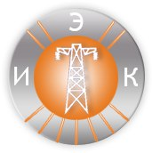

Торгово-производственная компания ООО "Ремонт Окон" рада предложить Вам услуги по ремонту, диагностике и техническому обслуживанию окон из ПВХ и алюминия.
СТОИМОСТЬ НАШИХ УСЛУГ В СРЕДНЕМ НА 30% НИЖЕ, ЧЕМ У КОНКУРЕНТОВ!
Наша компания занимается обслуживанием и ремонтом окон ПВХ уже более 7 лет. За это время мы вернули к жизни более 5 500 окон. Наши цены и качество выполняемых работ являются одними из лучших на Российском рынке ремонта и монтажа оконных конструкций.
Работаем с физическими и юридическими лицами
Наличный и безналичный расчет
Возможность оформления в кредит
Рассрочка на 6 месяцев без %
Индивидуальный подход
Детские сады, школы
Организации любой формы собственности
Отзывы наших клиентов
Еремин Валерий
29.07.17 (Замена утеплителя)
В октябре месяце обратился в компанию «Ремонт окон» по поводу замены уплотнителя в окнах ПВХ, т.к. моим окнам уже 15 лет и уплотнитель поизносился. В удобное для меня время приехали мастера и начали работать. Честно говоря, очень порадовал подход и отношение. При этом все вежливо и по делу. А то у нас когда что-то продают — улыбаются, а как что-то случается, то вся вежливость мигом исчезает. Я от души желаю процветания компании «Ремонт окон» и рекомендую работать с ними. А главное, что теперь в морозы у меня тепло и комфортно.
Мишина Ирина
22.05.14 (Утепление подоконника)
Обратилась в компанию «Ремонт окон» с проблемой промерзания подоконника ( гарантия на установку у меня закончилась). Пришел инженер все посмотрел, посоветовал как лучше сделать. На следующий день приехала бригада мастеров, устранила все недостатки, которые допустила оконная фирма, в которой я заказывала окна. Теперь у меня тепло, уютно и подоконник не промерзает. Большое спасибо
Юлия Кулакова
22.05.14 (Регулировка створок)
У нас плохо закрывались створки окон. Кроме того, была перекошена и не закрывалась раздвижная створка балкона. Приехали мастера фирмы «Ремонт окон» и быстро все исправили. Теперь все в порядке. Спасибо.
Скорая помощь вашим окнам
Наши профессиональные специалисты вернут жизнь и престижный вид вашему окну
Наши партнёры

При диагностике ваших изделий наши специалисты проверяют все возможности нарушений, если таковые есть:
Во-первых, очень важно чтоб изначально технология производства изделий соблюдала всем требованиям. Если были допущены ошибки в этих процессах, в дальнейшем могут возникнуть различные проблемы от продуваний и замерзаний до поломки оконной фурнитуры. Если такое случилось, не торопитесь расстраиваться, и тем более, полностью менять ваши изделия. Мы сможем вернуть им жизнь и престижный вид.
Во-вторых, необходимо проверить технологию монтажа и отделке ваших окон. Непрофессионализм в этой сфере приведет к конденсату или обледенению, по всему периметру окна; проблемы в процессе открывания и закрывания створок; сколы на стеклопакетах, некачественная герметизация стыков откосов и подоконника к окну. Все эти нарушения можно исправить качественно быстро и за разумную цену.
Ну и конечно, далеко не всегда вину следует возлагать на производителей и монтажников. Очень часто сами пользователи не правильно эксплуатируют свои установленные окна и двери. Не соблюдают обязательные правила, такие как ежегодная смазка все металлических механизмов хотя бы любым машинным или специальным оконным маслом. Обратившись в нашу организацию – наши специалисты помогут вам БЕСПЛАТНО выявить все недостатки и нарушения ваших изделий, предложат вам оптимальный вариант по их устранению. В любом случае, профессиональная диагностика в компании ООО «Ремонт Окон» позволит увидеть причинно-следственную связь между конкретной неполадкой и дефектом, которым она вызвана.
Когда нужна регулировка окон?
- при затруднении открывания или закрывания створки (двери); - не плотно прилегает створка, вызывая в дальнейшем продувания, промерзания; - створка провисла; - окно не открывается, не закрывается; - не поворачивается ручка вообще или "вхолостую"; - ручка сломалась
Произведем регулировку вашего окна (двери) с выравниванием геометрии створки - от 550 р. Регулировка шестигранником - от 150 р. Вызывайте наших специалистов, и убедитесь в профессионализме и качестве их работы. Опыт работы более 7 лет. Гарантия на ремонтные работы. Постоянным клиентам скидки.
Г. Иваново, ул. Лежневская, д. 55, ТРК Тополь, 4 уровень, напротив МФЦ
Как правило, в холодное время года все чаще возникают проблемы с установленными изделиями ПВХ вашего дома. А именно это продувание. Одна из основных причин - износ уплотнительной резины. Если не предусмотрен необходимый уход за резиной, как ежегодная смазка, то она грубеет и черствеет, либо резина может просто изначально при изготовлении изделия быть установлена не той марки, что в последствии приводит к образованию щелей в прихлопе между створкой и рамой. От окна начинает исходить пронзительный холод. К сожалению, за все время работы нашей компании с 2007 года, большинство всех вызовов специалиста связанно именно с этой проблемой. И это доказывает нам, что большинство производителей пластиковых окон либо изготавливают некачественные изделия, либо экономят на материалах и механизмах. Так же непрофессиональный монтаж, отсутствие необходимой герметизации стыков образуют продувания и сквозняки, и для устранения этих дефектов необходимо чаще всего демонтаж изделия с последующим качественным монтажом, герметизацией и установкой новых теплых ПВХ откосов по ГОСТУ. Сквозняки, связанные с поломкой фурнитуры, либо с устаревшей и почерствевшей уплотнительной резиной, можно устранить менее разрушительно, достаточно смазать, поменять уплотнительную резину или механизм, и Ваши изделия вновь обретут необходимую герметичность. Еще причиной сквозняков является так называемая в простонародье "провисшая" створка окна либо двери. В этом случае наши специалисты предлагают клиентам регулировку створки с выравниванием геометрии стеклопакетом. На примере обычной регулировки шестигранником, это наиболее эффективная, надежная и долговечная регулировка. Она помогает добиться ровной геометрии, а самое главное правильного герметичного прижима створки.
В компании ООО "Ремонт окон" все работы Вы можете доверить выполнению нашим специалистам с большим опытом и профессиональными знаниями. Во время диагностики специалист грамотно выявит причину ваших сквозняков и предложит наилучший вариант для решения этой проблемы. В процессе ремонтных работ мы используем только проверенные временем и качеством материалы и механизмы известных торговых марок.
Замена резины от 80 р п.м. Утепление (про пенка) монтажного шва от 100 р. П.м. Монтаж новых теплых откосов ПВХ от 500 р. п.м. Регулировка створки с выравниванием геометрии стеклопакетом от 550 р.
Наша компания предлагает:
- Изготовление и установка стеклопакетов взамен битых; - двухкамерный (3 стекла) стеклопакет взамен однокамерного (2 стекла); - установка стеклопакета с энергосбережением, мультифункциональные; - изготовление и установка стеклопакетов с тонировкой любого типа (глухая, легкая, зеркальная и т.д.), также профессиональная установка тонированных пленок производства США на Ваши стеклопакеты и стекла; - замена на стеклопакеты с бронированной пленкой; - замена стекла на стеклопакеты в лоджии необходимой толщины.
Основные характеристики
1. СПД32 - это традиционный пакет, используемый, как правило, в жилых и офисных помещениях. В данном варианте 3 стекла, 2 воздушные камеры. Стеклопакет обеспечивает минимальный риск образования конденсата. Цена за изготовление и установку от 2000 р. м2
2. Стеклопакет с энергосбережением. Установив этот стеклопакет, Вы обеспечиваете тепло сбережение вашего дома. Данный вариант почти исключает вероятность образования конденсата и наледи в условиях умеренной влажности. Цена за изготовление и установку от 2500 р. м2
3. Стеклопакет с мультифункциональным стеклом. Это лучшие свойства стеклопакета. Обеспечивает максимальное тепло сбережение, защиту от конденсата, а так же солнце защиту. Главное отличие - особое покрытие стекла, теплая рамка в стеклопакете, и конечно же шумоизоляция. Выбирая мультифункциональный стеклопакет, Вы сохраняете тепло зимой, прохладу летом.
Как мы работаем? Исходя из ваших пожеланий: Выполним замеры в удобное для вас время...подберем Вам наиболее оптимальный вариант стеклопакета или тонировки, удовлетворяющий вашим требованиям. Изготовим и установим в течение 2-3 рабочих дней. Замер стеклопакета - бесплатно.